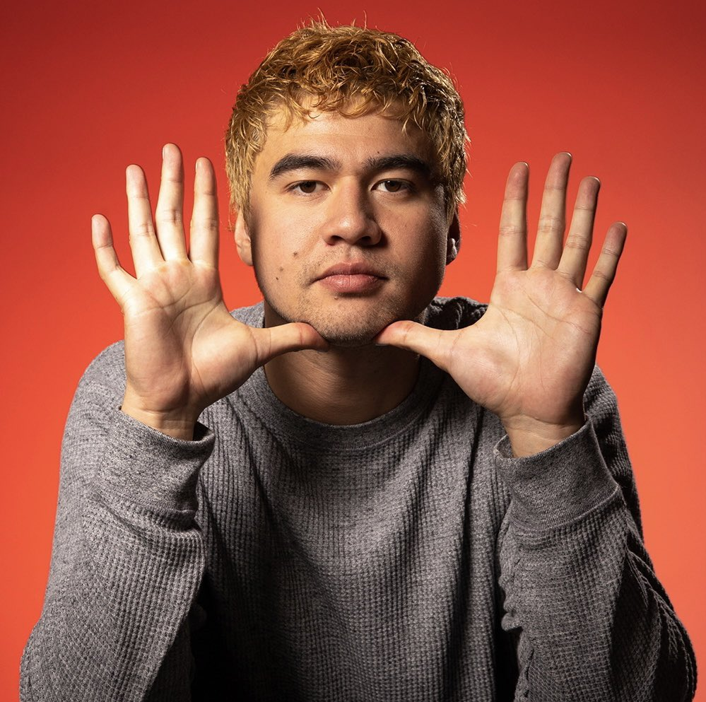
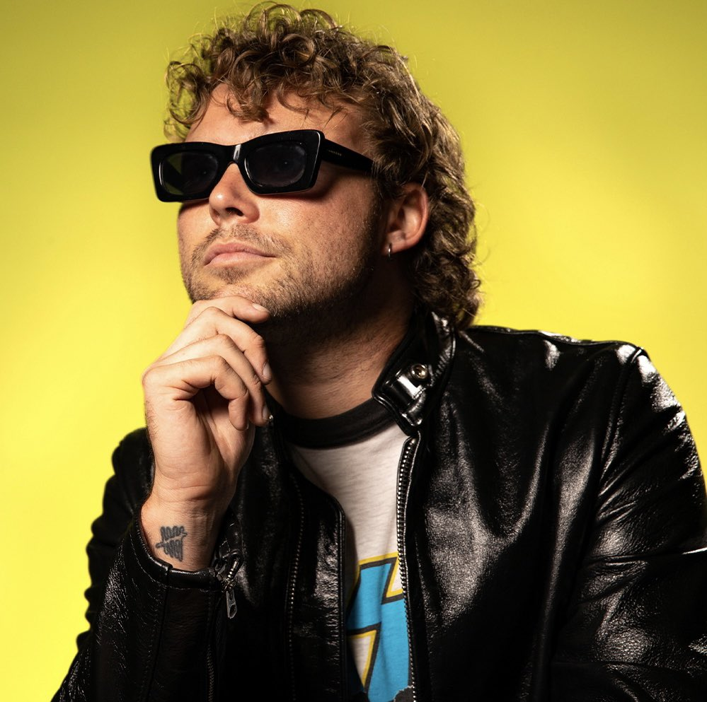

<!DOCTYPE html>
<html>
    <head>
        <title>5 Seconds of Summer</title>
        <link href='https://fonts.googleapis.com/css?family=Averia Serif Libre' rel='stylesheet'>
        <link rel="stylesheet" type="text/css" href="css/style.css">
        <link rel="icon" href="img/logo.png">
        <link rel="stylesheet" href="https://cdnjs.cloudflare.com/ajax/libs/font-awesome/5.15.3/css/all.min.css" integrity="sha512-iBBXm8fW90+nuLcSKlbmrPcLa0OT92xO1BIsZ+ywDWZCvqsWgccV3gFoRBv0z+8dLJgyAHIhR35VZc2oM/gI1w==" crossorigin="anonymous" referrerpolicy="no-referrer" />
    </head>
</html>

<!--NAVIGATION AND HEADER-->
<div class="hero" id="Home">
    <video autoplay loop muted plays-inline class="back-video">
        <source src="img/mmi.mp4">
    </video>
    <nav>
        <li>
            <div class= "logo"> </div>
            <li><a class="active" href="#Home">Home</a></li>
            <li><a href="#About">About</a></li>
            <li><a href="#Members">Members</a></li>
            <li><a href="#Media">Media</a></li>
            <li><a href="#Albums">Albums</a></li>
            <li><a href="#SocialMedia">Social Media</a></li>
        </li>
    </nav>

    <div class="content">
        <center><h1>5 Seconds of Summer</h1></center>
    </div>
</div>

<!--ABOUT-->
<div class="about"  id="About">
    <div class="main">
        
        <div class="about-text">
            <h2>About <span>5 Seconds of Summer</span></h2>
            <p>5 Seconds of Summer, often shortened to <span>5SOS</span>, are an Australian pop rock band from Sydney, New South Wales, formed in late 2011. The group consists of lead vocalist and rhythm guitarist <span>Luke Hemmings</span>, lead guitarist <span>Michael Clifford</span>, bassist <span>Calum Hood</span>, and drummer <span>Ashton Irwin</span>. Originally beginning their career as YouTube celebrities, they rose to international fame while touring with English-Irish boy band One Direction on their Take Me Home Tour. Since 2014, 5 Seconds of Summer have sold more than 10 million albums, sold over 2 million concert tickets worldwide, and the band's songs streams surpass 7 billion, making them one of the most successful Australian musical acts in history.</p>
        </div>
    </div>
</div>

<!--MEMBERS-->
<div class="members" id="Members">
    <div class="title">
        <h2>Members</h2>
    </div>

<div class="box">
    <div class="gallery">
        
        <div class="overlay">
            <h5>Calum Hood</h5>
            <p>Bass guitar, keyboards, backing and lead vocals</p>
        </div>
    </div>

    <div class="gallery">
        
        <div class="overlay">
            <h5>Ashton Irwin</h5>
            <p>Drums, percussion, keyboards, backing and lead vocals</p>
        </div>
    </div>

    <div class="gallery">
        
        <div class="overlay">
            <h5>Luke Hemmings</h5>
            <p>Lead and backing vocals, rhythm and lead guitar, keyboards</p>
        </div>
    </div>

    <div class="gallery">
        
        <div class="overlay">
            <h5>Michael Clifford</h5>
            <p>Lead and rhythm guitar, keyboards, backing and lead vocals</p>
        </div>
    </div>
</div>
</div>

<!--MEDIA-->
<div class="media" id="Media">
    <div class="title">
        <h2>Media</h2>
        <p>Personal Favorite 5SOS Live Performances</p>
        <iframe width="320" height="215" src="https://www.youtube.com/embed/_5dtEJAVGp8" title="YouTube video player" frameborder="0" allow="accelerometer; autoplay; clipboard-write; encrypted-media; gyroscope; picture-in-picture" allowfullscreen></iframe>
        <iframe width="320" height="215" src="https://www.youtube.com/embed/VpN9YziPy50" title="YouTube video player" frameborder="0" allow="accelerometer; autoplay; clipboard-write; encrypted-media; gyroscope; picture-in-picture" allowfullscreen></iframe>
        <iframe width="320" height="215" src="https://www.youtube.com/embed/Gz7WnIN3t4A" title="YouTube video player" frameborder="0" allow="accelerometer; autoplay; clipboard-write; encrypted-media; gyroscope; picture-in-picture" allowfullscreen></iframe>
        <iframe width="320" height="215" src="https://www.youtube.com/embed/VHi67frcH7o" title="YouTube video player" frameborder="0" allow="accelerometer; autoplay; clipboard-write; encrypted-media; gyroscope; picture-in-picture" allowfullscreen></iframe>
        <iframe width="320" height="215" src="https://www.youtube.com/embed/SJYO0p8CpQc" title="YouTube video player" frameborder="0" allow="accelerometer; autoplay; clipboard-write; encrypted-media; gyroscope; picture-in-picture" allowfullscreen></iframe>
        <iframe width="320" height="215" src="https://www.youtube.com/embed/NmPuIf--B3k" title="YouTube video player" frameborder="0" allow="accelerometer; autoplay; clipboard-write; encrypted-media; gyroscope; picture-in-picture" allowfullscreen></iframe>
    </div>
</div>


<!--ALBUM-->
<div class="albums" id="Albums">
    <div class="title">
        <h2>Albums</h2>
        <iframe style="border-radius:12px" src="https://open.spotify.com/embed/album/6GKIr03B2yvdP0TkWiGJVV?utm_source=generator" width="30%" height="380" frameBorder="0" allowfullscreen="" allow="autoplay; clipboard-write; encrypted-media; fullscreen; picture-in-picture" loading="lazy"></iframe>
        <iframe style="border-radius:12px" src="https://open.spotify.com/embed/album/43v9cUsP5K0hvu9iyuAzmZ?utm_source=generator" width="30%" height="380" frameBorder="0" allowfullscreen="" allow="autoplay; clipboard-write; encrypted-media; fullscreen; picture-in-picture" loading="lazy"></iframe>
        <iframe style="border-radius:12px" src="https://open.spotify.com/embed/album/2D0Hi3Jj6RFnpWDcSa0Otu?utm_source=generator" width="30%" height="380" frameBorder="0" allowfullscreen="" allow="autoplay; clipboard-write; encrypted-media; fullscreen; picture-in-picture" loading="lazy"></iframe>
        <iframe style="border-radius:12px" src="https://open.spotify.com/embed/album/46K4raQPIGem3N031upNj9?utm_source=generator" width="30%" height="380" frameBorder="0" allowfullscreen="" allow="autoplay; clipboard-write; encrypted-media; fullscreen; picture-in-picture" loading="lazy"></iframe>
        <iframe style="border-radius:12px" src="https://open.spotify.com/embed/album/26uA5pGrTovBLxikRsMQJ4?utm_source=generator&theme=0" width="30%" height="380" frameBorder="0" allowfullscreen="" allow="autoplay; clipboard-write; encrypted-media; fullscreen; picture-in-picture" loading="lazy"></iframe>
    </div>
</div>

<!--SOCIAL MEDIA-->
<div class="sosmed" id="SocialMedia">
    <center><h3>5 Seconds of Summer<br>Follow our social media</h3></center>
    <div class="social">
        <a target="_blank" href="https://www.facebook.com/5secondsofsummer"><i class="fab fa-facebook-f"></i></a>
        <a target="_blank" href="https://www.instagram.com/5sos"><i class="fab fa-instagram"></i></a>
        <a target="_blank" href= "https://twitter.com/5SOS"><i class="fab fa-twitter"></i></a>
        <a target="_blank" href="https://www.youtube.com/channel/UC-vKwDHcbPLtjml81ohGRng"><i class="fab fa-youtube"></i></a>
        <a target="_blank" href="https://www.tiktok.com/@5sos"><i class="fab fa-tiktok"></i></a>
    </div>
    <a target="_blank" href="https://www.5sos.com/" class="btn">5 Seconds of Summer Official Website</a>
</div>

<footer>
    <div class="footer">
        <small>Copyright &copy; 2022<br> Rossiani Darmawan - XII MM.</small>
    </div>
</footer>
